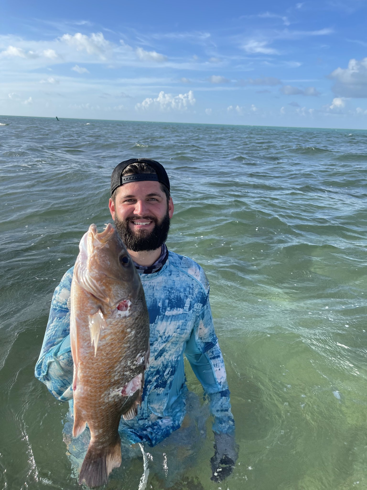
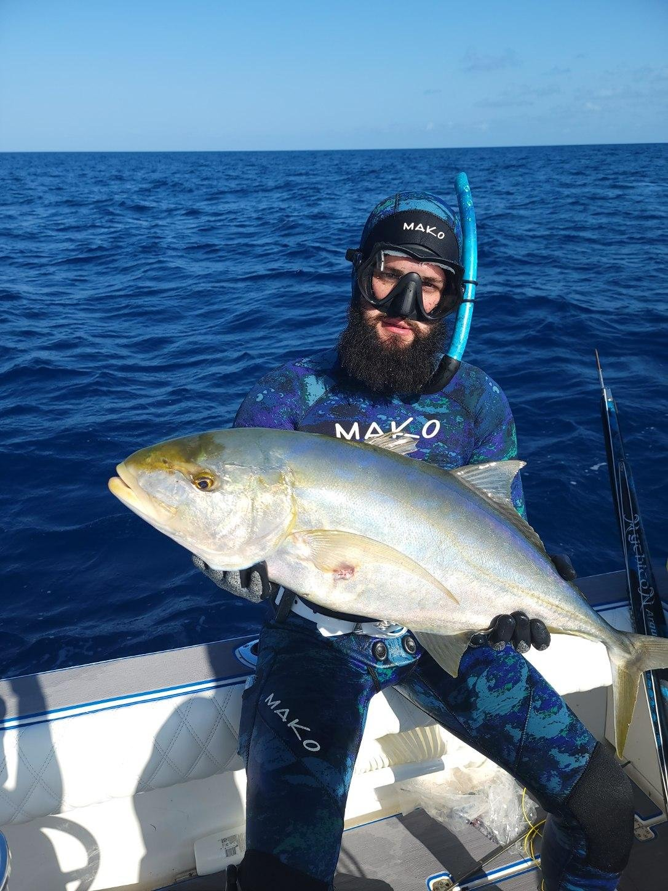

I truely enjoy being out on the water with some friends. There is something about diving deep and catching dinner for the family. I think that it is both challanging as well as invigorating.
 I love being out in fresh air with my family enjoying nature. My two young boys love adventures and the outdoors.